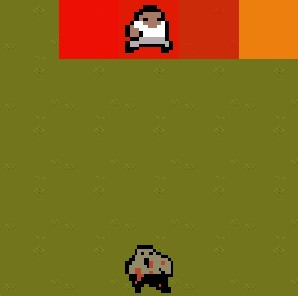

AI Research Project
This project is a collective effort between two other students and I. The premise of the project is a cat and mouse game, where one agent is chasing the other. The agent that is running away takes advantage of the A* search algorithm to run away, while the chasing agent is learning using Reinforcement Learning through a q table on how to catch the A* agent. The program runs through 1000 episode through 5 different boards with an animation every 50 episodes to illustrate how the reinforcment learning agent does over the 1000 episode trial. My contribution to the project was the integration of the maze environment with the OpenAIGym framework and the implementation of the QLearning RL Class. The image of the human and zombie is a frame from when the program runs.

Github:
 AI Research Project
AI Research Project